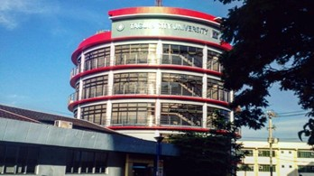
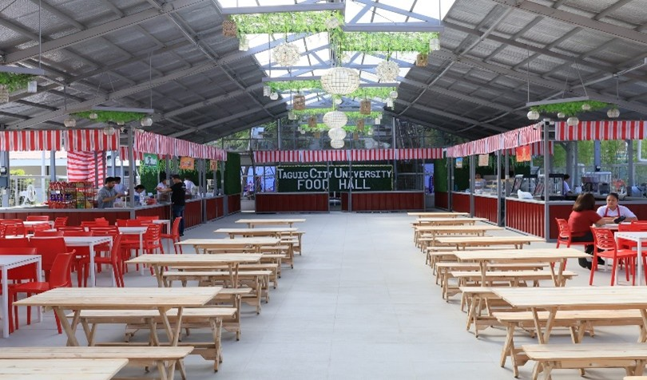

About Arellano University
AU was established in 1938 by Florentino Cayco Sr., the first Filipino Undersecretary of Public Instruction. Initially named Arellano Law College, it was dedicated to the study of law and named after Cayetano Arellano, the first Filipino Chief Justice of the Supreme Court. The institution temporarily closed during World War II but reopened in 1945 as Arellano Colleges, expanding its offerings to include commerce, foreign service, and arts and sciences. In 1947, it achieved university status and was renamed Arellano University.
- Vision - Mission: Vision: To be a model institution of learning where relevant knowledge is acquired and skills are developed in response to the needs of the global community. Mission: To provide equitable access to learning through relevant, innovative, industry-sensitive, and environment-conscious academic programs and services.
- Our Core Values:
Available Courses
- Law: Through the Arellano University School of Law.
- Arts and Sciences: Programs in humanities, social sciences, and natural sciences.
- Education: Degrees in elementary and secondary education.
- Business and Technology: Courses in accountancy, business administration, computer science, and hospitality management.
- Criminal Justice Education: Bachelor's degree in criminology.
Contact Information
Address: 2600 Legarda Street, Sampaloc, Manila, Philippines.
Phone:8-734-7371
Email: www.arellano.edu.ph